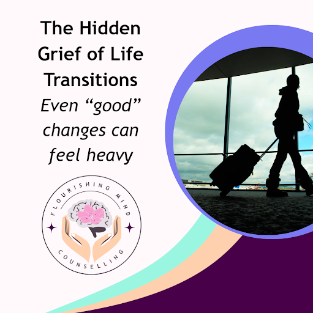
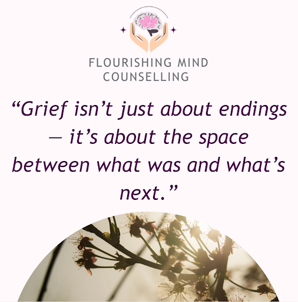

The Hidden Grief of Life Transitions: Even “Good” Changes Are Hard
By Jessica Klimkovitch June 29, 2025

Not all grief comes from loss through death. Some of the most painful emotional experiences come from the quieter, less visible losses — the ones we aren't always taught to name.
These are called non-death losses, and they often show up during life transitions that, from the outside, may even look “positive.”
Examples of Hidden Grief:
Leaving a job, school, or city you loved
Becoming a parent and grieving your former freedom or identity
Changing careers or retiring
Moving in with a partner and adjusting to a new routine
Recovering from illness or injury and feeling disconnected from your old self
Why These Transitions Feel So Emotional:
Even when we choose change, we are still letting go of something else.
We might grieve old versions of ourselves, lost dreams, or relationships that feel different. These changes are valid and deserving of care.

What You Can Do:
Name the loss. Giving language to your grief makes it real — and more manageable.
Feel without minimizing. You don't have to justify your emotions by comparing them to someone else's.
Talk about it. Therapy is a safe space to process non-death losses and find meaning in your transition.
Grief isn't just about endings — it's about the space between what was and what's next.
And you don't have to navigate that space alone.
We're here to support you through every season — especially the ones that feel heavy, quiet, or complicated.